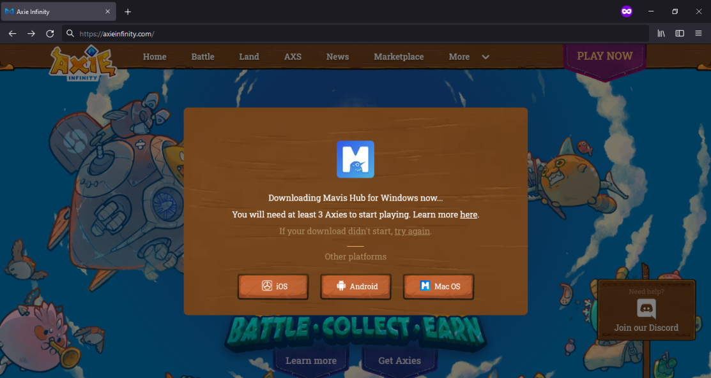
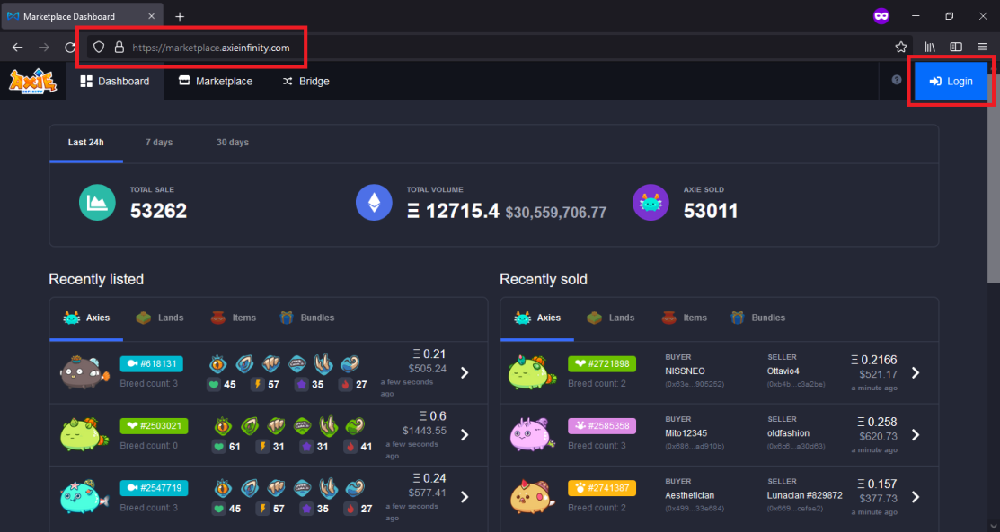
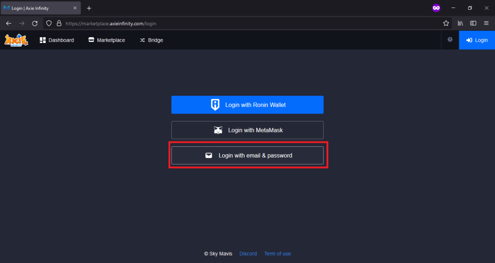
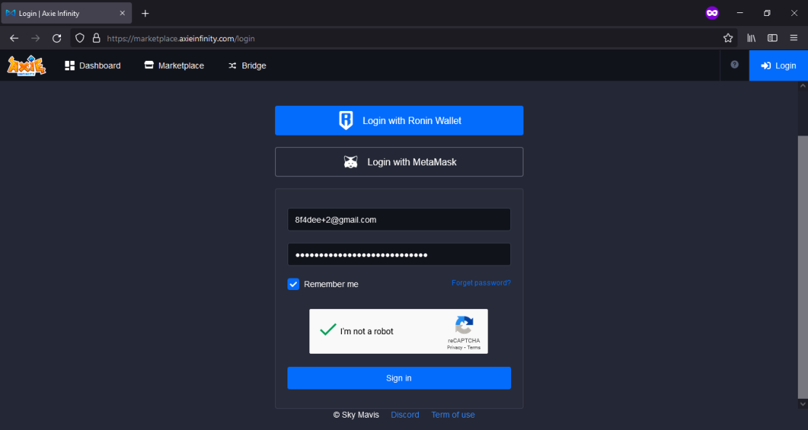
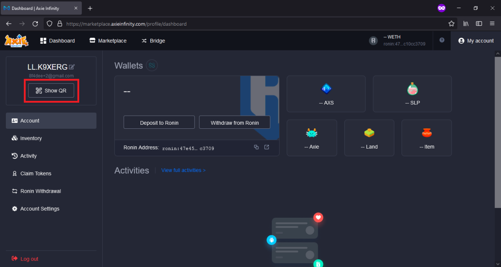
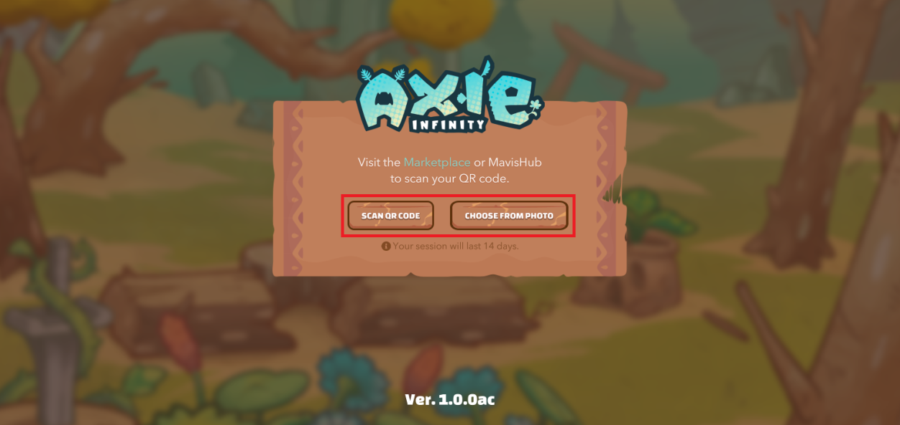
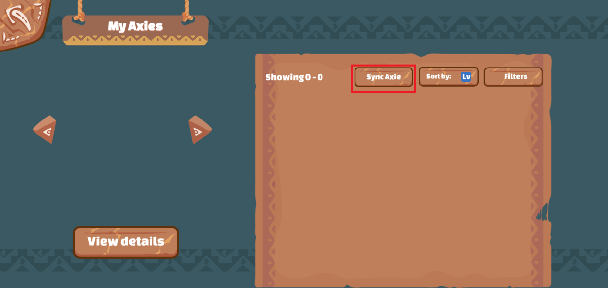
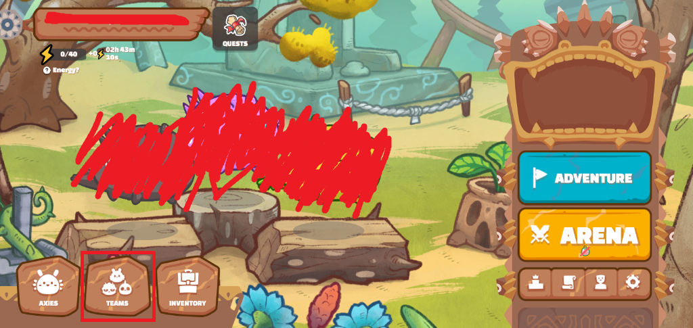
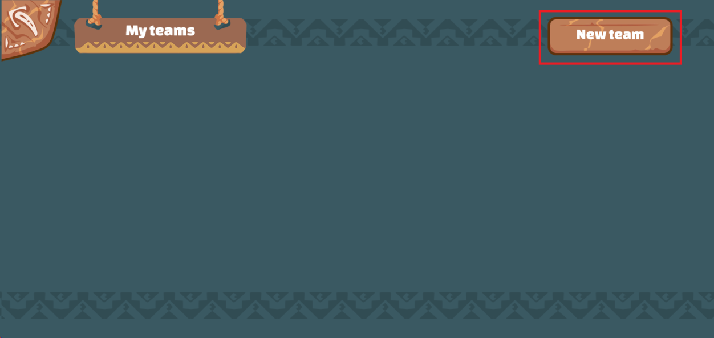

#1 Go to https://www.axieinfinity.com/ and click "Play Now" to download the game.
#2 It should detect automatically your OS and download the correct file, after downloading continue with the installation.
#3 Go to https://marketplace.axieinfinity.com/ and click login.
#4 Click "Login with email & password".
#5 Enter your login credentials, provided by the manager in private message.
#6 After signing in, click show QR code if you're on playing on mobile, if not, you can skip this part and just login directly from the mavis hub. This should show a QR code that you'll need to scan from the mobile app.
#7 On the mobile app click scan or choose from photo if you saved the QR code from the previous step. This should take a while to load at your very first login.

#8 Once it finished loading, you should see something like this (without the axies at the front page). Now, click axies at the bottom left.
#9 Click sync axies, after that, it should show your axies.
#10 Go back to the main menu and click teams.
#11 Click new team.

#12 Use the buttons to place your axies in their correct position and enter the team name, then save.